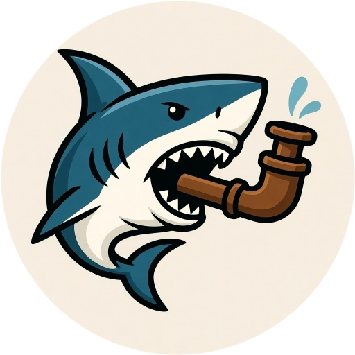
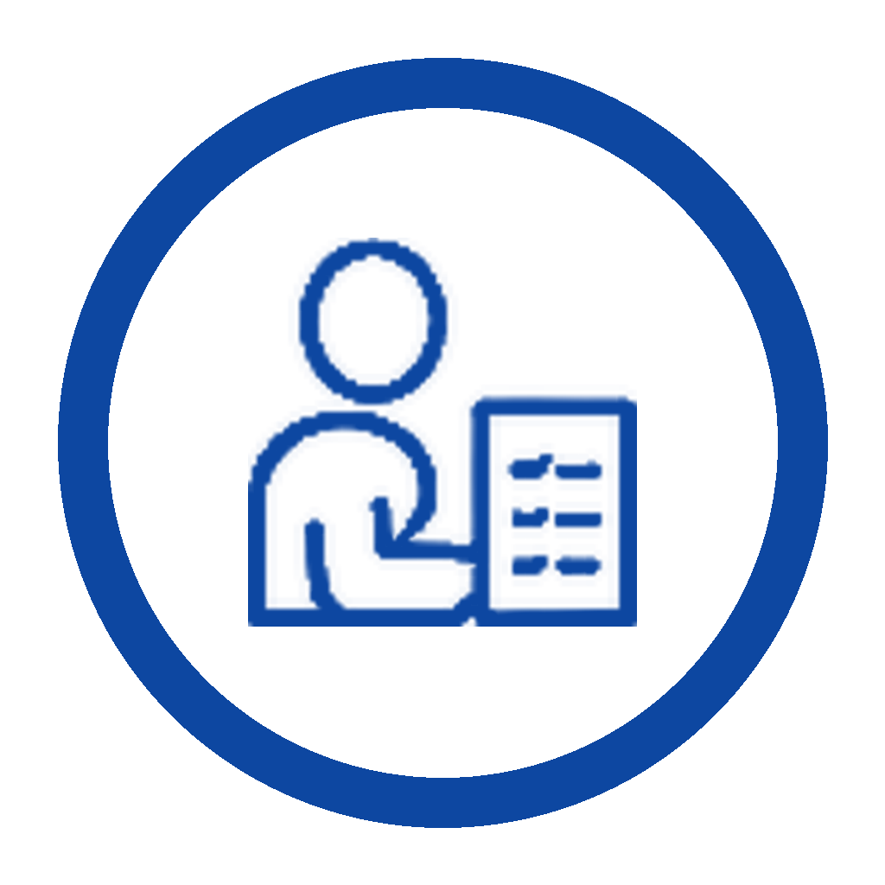
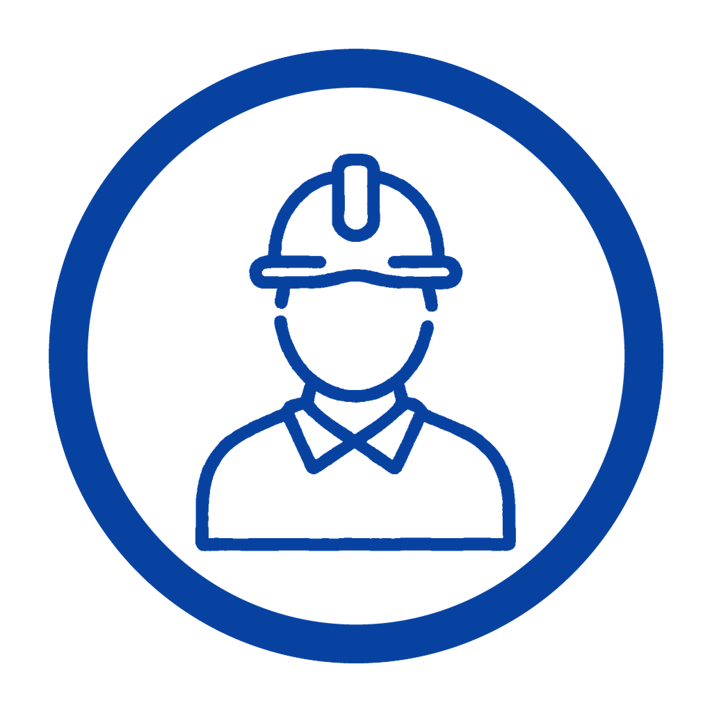
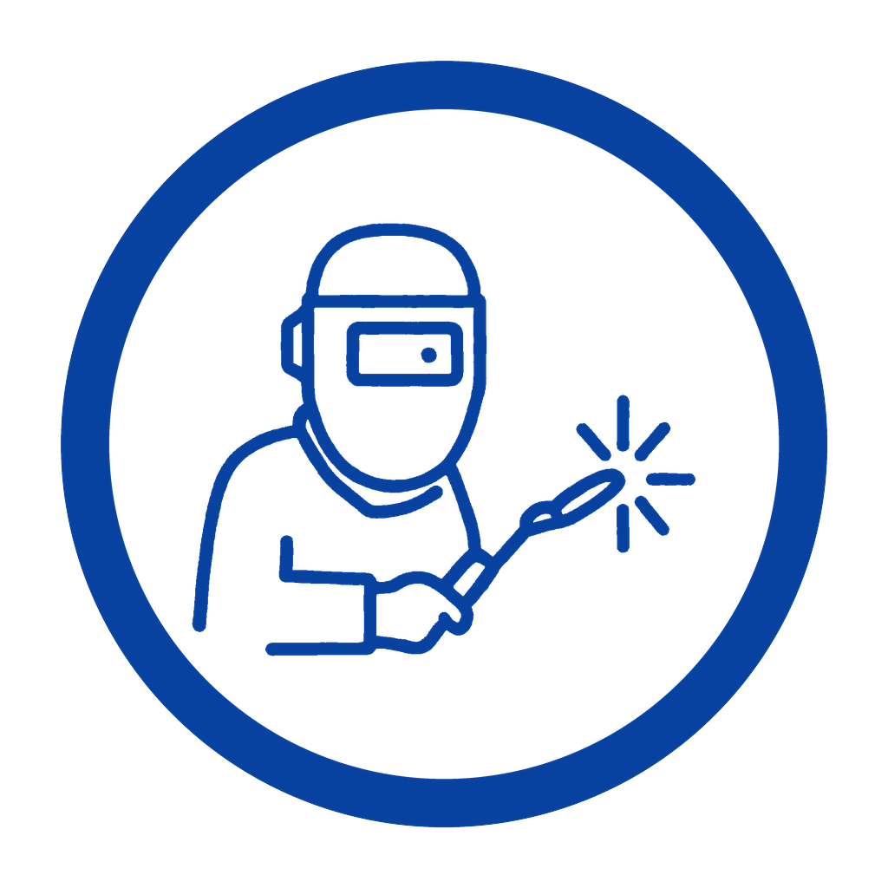
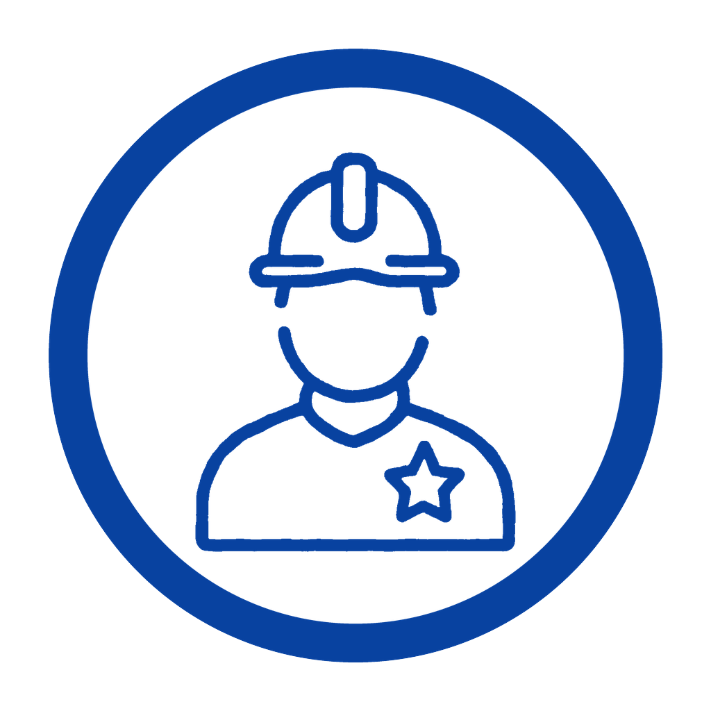
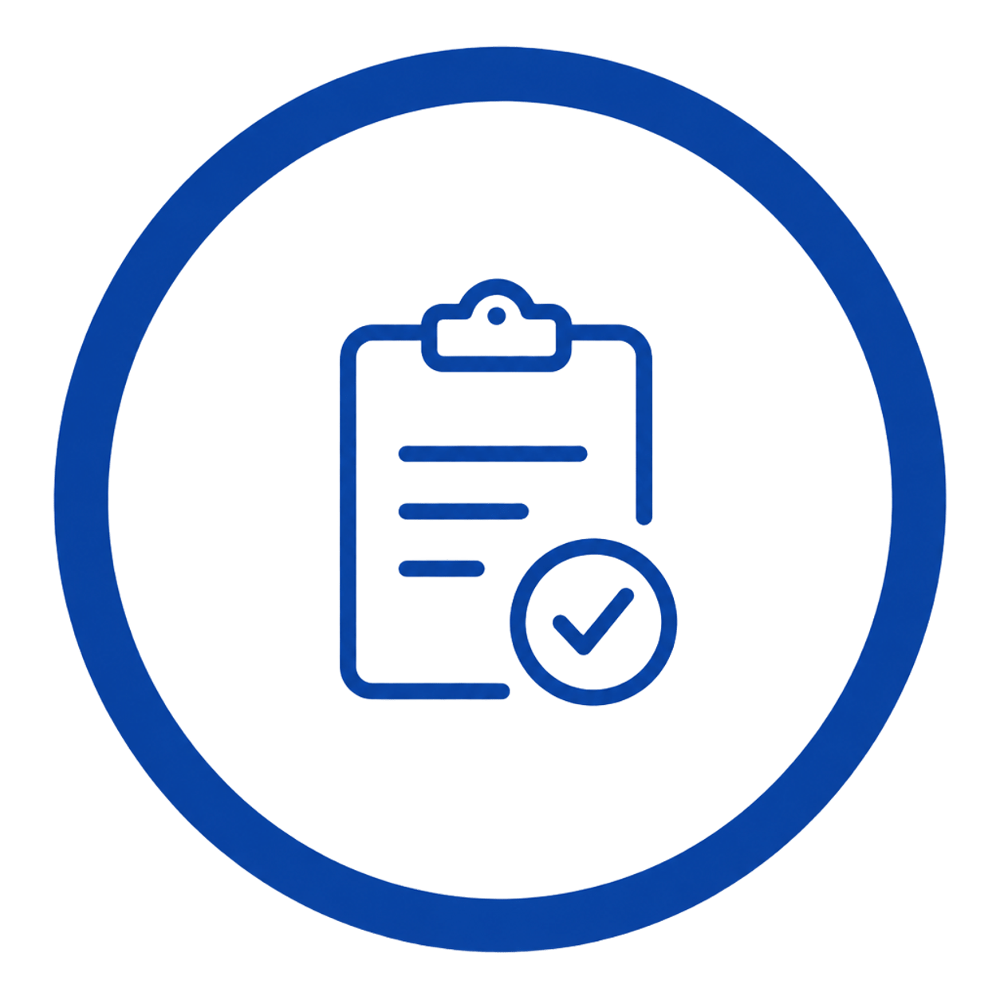
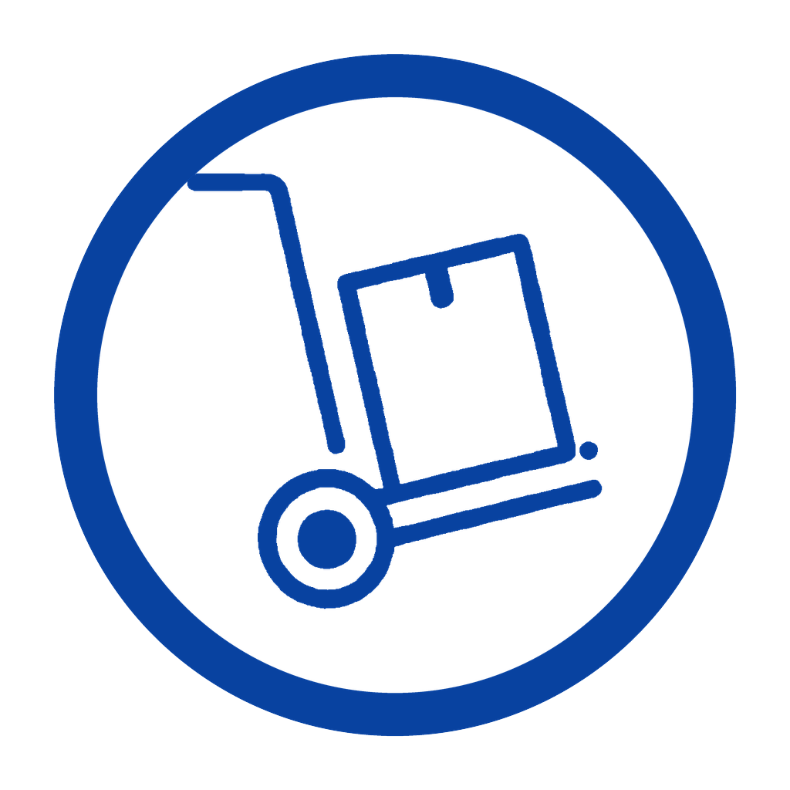

WeldPassport

ОК
ПТО

Мастер / прораб

Сварщик

Главный сварщик

Контроль качества

МТО / кладовщик
Войти
Превью статично. Наведите курсор на разделы — видны hover-состояния. Рабочая интерактивная версия — в React (npm run dev).